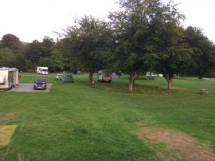
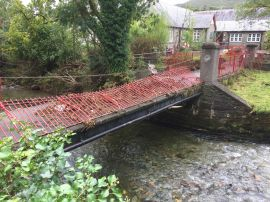
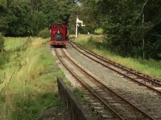
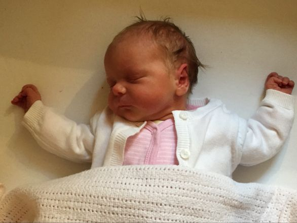

We had been supposed to go to Looe with David and Anne Bowman and Freda and John Lang in May but the holiday was deferred until October because of Covid 19 and Lockdown. However, just before we were due to go, Freda heard that she had tested positive for the virus and so she and John were not able to come away – they had been tested as part of a research programme they had volunteered for. Thankfully, neither Freda nor John experienced any symptoms during the three weeks following the test on 28 September.
Although we were disappointed that John and Freda couldn’t come to Looe, the rest of us decided to go anyway. We left Fairford on Saturday morning and meandered down to Looe arriving mid afternoon.
Looe was perhaps a little busier than we expected (especially at the weekend). Nevertheless it was not too crowded and we had a lovely time. The weather was mixed and Annie and Gerry ended up wearing full wet weather gear for walks on two days.

David managed to borrow a wheelchair for Anne so that she didn’t have to walk from our cottage (close to the beach) in East Looe over the bridge to the Jolly Sailor in West Looe. David and Anne are well known in the jolly Sailor from previous visits and we were made very welcome – the staff reserved a table for us out of the way but in the main bar. We felt perfectly safe, and spent five evenings in the pub including having dinner on four of them.
In order to avoid an early start on Saturday (had to be out by 9:00 am), we headed home on the Friday afternoon and had a great drive home arriving at tea time! The four of us agreed that we had had a really enjoyable break.
Three weeks into September we embarked on a week’s holiday at Harford Bridge near Tavistock (Devon). We have stayed at Harford Bridge many times before and used to camp although a few years ago we started to rent a mobile home. This year we had a different mobile home with views over the main camping area. The site was as beautiful as ever and indeed much updated since our last visit in 2017. There were far more (very smart) campervans and caravans than previously although there were still a couple of tents. Covid 19 meant there were a lot of new site rules but they all seemed logical and clear so presented no problem.
We managed a short walk on the Saturday evening around the camp site and adjacent roads but the next day we went on a favourite walk of ours to the Church on top of Brent Tor. St Michael de la Rupe which is the highest working church in Southern England was open and we enjoyed a few minutes of quiet reflection before continuing our circular walk. The rough ground up to and down from the Church reminded us that age is certainly beginning to tell us to think carefully about terrain and gradients! In the afternoon we walked at the National Trust site of Lydford Gorge. We had had to book a timed slot and found the number of other visitors and the need to socially distance somewhat limited our enjoyment. That certainly was not the case the next day (Monday) when we had booked a timed slot to enter Lanhydrock for our usual circular walk. In fact, we found out we needn’t have booked just for the walk which we did enjoy. However, on the way down to Lanhydrock, Annie suggested we visit Siblyback Lake on Bodmin Moor. It was lovely and we enjoyed a peaceful 3 mile walk around the lake.
The following day we enjoyed two walks with the first on Haytor. The aim of the walk was to visit the Haytor Granite Tramway built to convey granite from Haytor Down to the Stover Canal. It was very unusual in that the track was formed of granite sections, shaped to guide the wheels of horse-drawn wagons. The quarry has long since been abandoned but the Dartmoor ponies are still around.
Close to the abandoned quarry we found a beautiful bank of purple heather that was the finest we saw during our holiday. The walk was memorable because of the peace and quiet, the views and the marvel of the tramway. The only down side was that Haytor itself became shrouded in mist towards the end! From Haytor we drove to Chagford at the north eastern edge of Dartmoor. We enjoyed a picnic sitting on some lovely benches outside the Church. After lunch, and although the weather was getting “iffy”, we set off on a pleasant 2 mile stroll that followed the banks of the River Teign.
Later in the week we met up with Annie’s sister Pam and husband Neil for lunch at the Strawberry Fields Farm Shop in Lifton. The restaurant was well laid out with plenty of space between tables and clear rules to minimise the Covid risk. The food was good and a lot of catching up with each other’s news – who knows when we will be able to meet up again for a restaurant meal!
During our stay we waked across the fields and hills from Harford Bridge to Mary Tavy and then back on tracks and roads via Peter Tavy. The walks were just over three miles long and a nice way of rounding off or starting the day.
The weather broke on Thursday evening so we decided to return home on the Friday. We had had a great holiday and really enjoyed the walking despite, as said earlier, the need to think about the inclines and descents more than we used to!
Post Script.
On our Lanhydrock walk we passed through a gateway that looked as though it hasn’t been disturbed since the second photo was taken five and a half years before in March 2015.
It was with some trepidation that we set off for 3 nights in The White Lion Royal Hotel in Bala on the first Sunday in September. It was to be our first “holiday” break since our trip to France at the end of February. We meandered up through mid Wales and arrived at Bala in the early afternoon. We had to wait to get into our room because of Covid regulations and protocols. There would be neither room service nor routine topping up of tea and coffee etc (that was by request through the front desk). Breakfast was to be provided to order from a limited menu in the dining room (socially distanced of course) at a pre-booked time. Nevertheless, we were quite happy with the arrangements.
Our first activity was our customary walk along the banks of the River Trywerin and Lake Bala. We managed to see two Herons in spots where we have seen them before and enjoyed views of the lake with the sun shimmering on the water despite some ominous black clouds above.
The next morning, after a pleasant breakfast, we set off for Bodnant Gardens. The gardens are about an hour’s gentle drive from Bala and we arrived just before our pre-booked entry slot. The arrival procedure went smoothly and we were soon free to walk the gardens. We completed a circular walk of some 2.5 miles and although not the best time of the year to visit, enjoyed many lovely views. The photographs below show various plants including some fungi that were rather impressive in their size and shape. The final photo is of a border we photograph on every visit and it was as stunning as ever!

From Bodnant we drove to Llanberis and down the LLanberis Pass. We didn’t know what to expect on the drive had recently seen news footage of cars parked all along the pass and police activity towing cars away and placing parking tickets on others, What a difference a weekday in September brings. The lay-bys were virtually empty and there were no dangerously parked cars anywhere. We stopped and enjoyed a picnic before continuing down the pass and across to Beddgelert. We parked up and were walking down towards the town centre when we saw a bridge from the road to the primary school that seemed was badly damaged. There had been some very heavy rain a couple of weeks previously and trees and other debris had caused a dam to form. The dam was eventually breached and a torrent of water rushed through the town and across to the river plain. Several shops and buildings had been flooded and during our walk to Gellert’s Grave and along the river, we could see from debris in the fields and against fences that the flood water had covered a massive area. However, despite the short interval the ground was amazingly dry and you could be forgiven for thinking that there had been no flood. However, that wasn’t true for the businesses and properties still closed because of flood damage.
We also saw some beautiful heather on the mountain side.
Our next day saw us head to Morfa Mawddach and our usual walk across the bridge over the estuary to Barmouth. Barmouth was as disappointing as ever and quite clearly the people did not believe in social distancing and also, no masks were required in shops (Masks became compulsory in Welsh shops a couple of days after we returned to Fairford). We enjoyed our walk and just made it back to the car as the weather started to close in. During our walk we had seen a train up close and as usual Gerry couldn’t resist a photo. From Morfa we headed to Fairbourne and were treated to a beautiful site of a train on the Fairbourne light railway.
Although the weather became quite windy and wet we continued our drive down the coast to Towyn and Aberdovey before returning to Bala. The Bala Lake railway was operating although timing prevented us from travelling on it. However, we came across the train when we stopped beside the lake

By the time we returned to Bala for our daily walk by the Lake and river we were treated to a wonderful rainbow.
We returned to Fairford the next day. A lovely stay, but we were happy to return home, lockdown has certainly made us wary of people, busy towns, shops and restaurants!
After celebrating the birth of Hannah Hopkins and the wedding of Hannah and James on the 14th of March, we decided to lockdown in the face of the Corona virus Covid-19. In fact, we locked down a week before the country was ordered to do so by the Government. In preparation for what we considered was going to be a lengthy period of lockdown, we had booked Tesco Delivery slots, bought seeds, compost and manure as well as ordering plants and seedlings on line for Spring delivery. We also bought some decorating material for Gerry and craft supplies for Annie. We quickly settled into a routine of breakfast, 3 to 4 mile walk, jobs around the house and garden before changing for the evening. The weather in April was sunny and dry and we enjoyed many an hour in our bus shelter. We didn’t panic buy much although we did order extra wine supplies. We coped very well and, surprisingly, found ourselves enjoying the regime. Our, but mainly Annie’s efforts, resulted in a garden that we were very pleased with and well able to enjoy. A glass of wine in the early evening often accompanied by a game of Smite or Boule seemed a wonderful end to the day.
As Spring moved into Summer we had some (in fact quite a lot) of much needed rain. Whilst the weather sometimes curtailed our garden activities, we continued to walk every day. Annie had a few days off when her knee started playing up, and, as we write this, Gerry has completed walks on every one of the last 124 days. Some walks were completed in full wet weather gear but most have been in very pleasant conditions. We intend to continue our daily walks as they, and the static bike, have certainly increased our fitness levels. Whenever we have been able, we have walked a circular route on the road from Eastleach to Southrop and returned via Fyfield. There has been so much to see including, roe deer, muntjac deer, herons, egrets, ducklings, stoat, a mole, rabbits, hares, red kites, buzzards, young lambs (not so small now) and regular encounters with some horses. However, most of all, it was the changing vegetation that fascinated us.
We watched farmers preparing fields, then sowing the crops. We then marvelled at the way the brown fields became greener each day until you suddenly realised that the crops were several inches high. One such crop of broad beans is now 24 inches at least. This week we have seen the first combine harvesters at work and the rape fields have long since lost their yellow colour as the seed pods form. One field we saw at the end of May was beautiful, the bright red poppies in the field of Flax.
We have both appreciated the change in seasons and the amazing changes in the hedgerows and roadside flowers. We also realised just how much narrower the roads have become as the road side vegetation has grown!
Below is a series of photographs taken over eight days early in July. Annie and I hope that you find them as beautiful as we do.

.
.
.
There were many more colourful and not so colourful wayside flowers but one couldn’t fail to marvel at the incredible beauty that surrounds us if only we look.
We also noticed how suddenly acorns, conkers, hips, haws, blackberries and other berries were suddenly filling out.

.
.
.
There were also many small flying insects, bees and butterflies. Once again you had to look if you were to see. Lockdown has taught us to look so much more carefully at what nature has to offer.
One of the fields we have watched from bare unprepared soil to a what looks to the laymen to be a wonderful crop of broad beans has a beautiful strip of wild flowers along the edge of the field.
During Lockdown Annie and Gerry have kept in touch with family and friends by phone, email, snail-mail, FaceTime, WhatsApp and Zoom. We have missed seeing and meeting people but technology has certainly helped compensate.
Our routine has been a great help and we have never felt bored. In fact, we have enjoyed the peace and solitude particularly when the roads were almost devoid of traffic and the air seemed to smell sweeter! We also enjoyed dressing for several special dinners.
We realise how lucky we have been to live in the country with a spacious house and nice garden. How different it was for those with young families living in high rise blocks of flats in busy towns. We are also thankful that our family in the UK and California have survived without major problems.
As lockdown eases, we do think of those less fortunate than ourselves and especially the friends and relatives of those who have suffered from or died with the virus.
Be Strong and Stay Safe.
We welcomed Lucy and James’s new daughter Hannah Elizabeth Hopkins on 5 March.

Mum and Hannah returned home from hospital the next day much to big sister Emma’s excitement.
We enjoyed a few days in Montreuil-sur-Mer at the end of February. We stayed in our usual hotel (L’Hermitage} and enjoyed wonderful meals at our favourite restaurants – L’Ecurie in Hesdin, Auberge du Cronqulet in Saint-Aubin, L’Esplinade at Berck Plage and Le Pot du Clape in Montreuil itself.
However walking was dictated by the weather – winds at Berck Plage, Rain and Snow in Montreuil but glorious walking weather for two walks based on nearby La Calotterie.
We had a lovely break despite stormy weather and closed motorways for our journey home!
The first three weeks of January 2020 were fairly quiet as Annie’s recovery from her knee operation continued. At the end of the month we set off for a week in Yorkshire at Westgate Cottage in Pickering (our third stay in the cottage). Although we had accepted that we would not be able to do a lot of walking, we did manage the Grosmont to Goathland walk along the bed of the old railway. We were concerned about the hill at the start and end of the walk but Annie managed it very well. We visited the Eden Camp Museum at Malton. Based in an old Italian prisoner of war camp, the museum was a treasure trove of stories and artefacts from the Second World War. We also had our usual bus trip to Whitby for lunch at the Magpie – as enjoyable as ever and met friends in York for lunch.
We were having a great week until the phone kept ringing with an automatic message to say that our burglar alarm had been activated. Although neighbours had checked the house for us and we were able to reset the alarm remotely, there was obviously a recurring fault. As a result we travelled home two days early.
So instead of walking in Yorkshire, we found ourselves walking around Eastleach to find carpets of snowdrops – is it Spring?
The next week we set off for 4 nights in Cornwall. We had lunch with long time Fairford friends Pam and Dave Nelmes on Thursday in Falmouth and, on Friday, made a nostalgic visit to Mevagissey. As proof of Annie’s ongoing recovery we climbed the long flight of steps from the breakwater to the top of the cliff overlooking the harbour and town.
Following our usual practice, we each enjoyed eating a hot pasty sitting beside the harbour after which we visited Trelissick for a walk around the house and gardens. The sight and smell of freshly mown grass and the camellias, daffodils and other spring plants certainly gave the impression that Spring had sprung.
A vision to be shattered 48 hours later with the arrival of Storm Ciara and its 75mph winds and torrential rain.
Although the storm meant that we headed straight home on the Sunday we had a brilliant Friday evening and Saturday with James, Hannah, Rosie and Ptolemy based in a cottage near Perranwell a few miles from Truro (a step up from the Premier Inn we stayed in for the first couple of nights).
.
The weather on Saturday was sunny but cold and windy. We travelled over the King Harry Chain Ferry to visit Pendower beach where we thoroughly enjoyed the sand, rock pools and flying the kite. After a bracing morning we headed to Falmouth for a pleasant lunch in an Italian restaurant. The evening was spent looking after the children whilst James and Hannah went to meet friends. We had a great time looking after Rosie and Ptolemy!

We thoroughly enjoyed our four days in Cornwall especially as the fault on the house alarm has been fixed!
We had originally thought we would have a quiet Christmas a deux but things turned out much differently and we were not disappointed.
A week before Christmas Day Annie had a phone call offering her knee surgery two days later! She accepted and had the surgery on the Friday. All went well and she was released from hospital on the Sunday. Although in much pain and with very restricted mobility, Annie set out to enjoy a busy few days over Christmas.
On Christmas Eve we drove to Caversham for lunch with Jenny, Mark, Bethany, Callum and Elsie. A Bonus was that Martin, Louise and Archie were staying with Jenny. On Christmas Day we went to Lucy, James and Emma’s home in Bath for traditional Christmas Lunch with them and James’s parents, Liz and John. On Boxing Day, James, Hannah, Rosie and Ptolemy together with Jon, Jess, Oscar and Felix came to stay for a couple of days. Despite the pain and restricted mobility, Annie coped amazingly well and a great time was had by all.
New Year’s Eve was spent quietly a deux and it was not until the 8th of January that we enjoyed our special “Christmas Meal” that we had planned to have before Annie’s surgery caused a change in plan!. We started with sparkling wine and then indulged ourselves with a delicious sea food banquet! we both thoroughly enjoyed the evening!
We had a really lovely Christmas seeing all of our UK based family and Annie getting her surgery was a real Christmas present as it means we can now plan trips and holidays for the 2020!
Towards the end of November and in early December we enjoyed a couple of short walks. The first was to Caen Hill on the Kennet & Avon Canal, one of the longest continuous flight of locks in the country – a total of 29 locks with a rise of 237 feet over 2 miles with a 1 in 44 gradient. We actually spent our time near the middle group of 16 locks that form a steep flight in a straight line up the hillside (some ¾ mile). Because of the steepness of the terrain, the pounds between these locks are very short. As a result, fifteen of the locks have unusually large sideways-extended pounds, to store the water needed to operate them. Unfortunately the ground was very wet and we could not really enjoy walking around the pounds.
.
Our other walk was a walk through Fairford Park including the Cascades.
The rain over recent weeks meant the Cascades were really like waterfalls.
.
.
.
In early December we caught the National Express Coach from Cirencester to London. Our first stop was for lunch at a Lebanese restaurant, Comptoir Libanaise, in Chelsea. Straight after lunch we walked to the Saatchi Gallery to see the Tutankhamen Exhibition. The exhibition contained 150 original artefacts from the tomb of the young pharaoh found in November 1922 by Howard Carter. The exhibition was quite breathtaking especially considering that the items were some 3350 years old. It was certainly worth the visit.
Photos below give an idea of the quality and beauty of the artefacts. Once the exhibition closes in 2020 the artefacts will return to Egypt.
We had not planned to do much in November after quite a busy October. However, we found a great offer on a hotel in Newquay Cornwall (The Kilbirnie) so we decided to go for 3 nights. We drove down via Looe for a lunch time walk and a pasty beside the harbour.
We then had a leisurely drive to Newquay. The hotel was great value but would not be our scene in the busy season! The weather was iffy but we walked into town and found a Curry House for supper we were seated by a large window and had a good view of the Newquay fireworks display. The following morning we drove to Truro to visit the Cathedral and wander around the town centre. It was pleasant despite it being cold and showery. We then drove to the village of Frogpool and the Cornish Arms where we met Dave and Pam Nelmes for lunch. It was lovely to catch up with them and enjoy a really pleasant lunch together. The next day brought slightly better weather so we drove to Mevagissey for a nostalgic visit (But we did not have our usual pasty). Our walk was limited because access to the main breakwater was blocked for resurfacing. Nevertheless the weather stayed reasonable for the duration of our walk. After Mevagissey we crossed to the northern coast and spent a pleasant hour walking around Padstow. The good thing about both places was the lack of tourists! We got back to our hotel just after lunch and went for a long walk through Newquay to the headland on the western end of the town. Once again we were fortunate with the weather.
We returned to Fairford for Remembrance Weekend and then left for Yorkshire on Monday morning. The weather forecast was not good and there was much flooding in parts of Yorkshire, We stayed once again at the cottage attached to the Pear Tree Bed and Breakfast in Pickering. Despite the weather and very wet ground we managed walks from Grosmont to Goathland along the track of the old railway line and also our usual Farndale walk. The walk along the Dale beside the river was on a decent path and so quite pleasant given the soaked state of the ground. We came across a couple of lines of quite spectacular fungi. If only we had the confidence to pick and cook them!
Surprisingly, it only rained for the last half a mile of the Farndale walk but we were wearing full wet weather gear and so were perfectly OK. The views were lovely and quite autumnal. Although, to be honest, it would have been better if the weather had been drier and crisper rather than damp.
BUT when we were getting changed in the car park at the end of the walk we were treated to a double rainbow.
On another day we travelled by bus into York and had a lovely lunch with friends who had travelled from Thorner. They had booked a table at a small French restaurant and we were certainly not disappointed. Our other day was spent taking the bus from Pickering to Whitby where we followed our usual pattern of wandering around the town before a leisurely lunch at The Magpie. Notice the lovely view of the Abbey from one of the streets on the other side of the estuary.
We thoroughly enjoyed both of our November breaks!